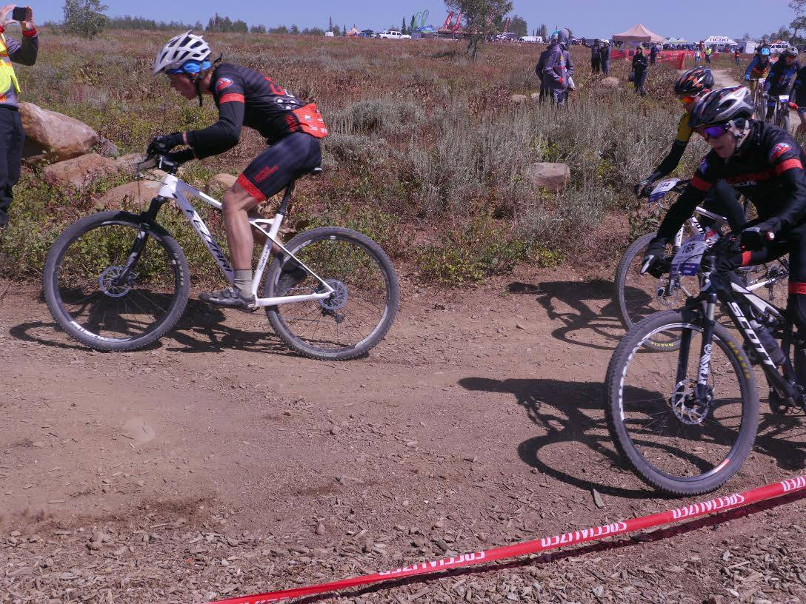

Look at that leg!

Look at that typewriter!

Look at that Dwarf Fotress!
A kitten (also known as a kitty or kitty cat) is a juvenile cat. After being born, kittens are totally dependent on their mother for survival and they do not normally open their eyes until after seven to ten days. After about two weeks, kittens quickly develop and begin to explore the world outside the nest. After a further three to four weeks, they begin to eat solid food and grow adult teeth. Domestic kittens are highly social animals and enjoy human companionship.
A puppy is a juvenile dog. Some puppies can weigh 1–3 lb (0.45–1.36 kg), while larger ones can weigh up to 15–23 lb (6.8–10.4 kg). All healthy puppies grow quickly after birth. A puppy's coat color may change as the puppy grows older, as is commonly seen in breeds such as the Yorkshire Terrier. In vernacular English, puppy refers specifically to dogs while pup may often be used for other mammals such as seals, giraffes, guinea pigs, or even rats.
Rabbits are small mammals in the family Leporidae of the order Lagomorpha, found in several parts of the world. There are eight different genera in the family classified as rabbits, including the European rabbit (Oryctolagus cuniculus), cottontail rabbits (genus Sylvilagus; 13 species), and the Amami rabbit (Pentalagus furnessi, an endangered species on Amami Ōshima, Japan). There are many other species of rabbit, and these, along with pikas and hares, make up the order Lagomorpha. The male is called a buck and the female is a doe; a young rabbit is a kitten or kit.